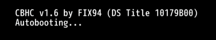

La Guía de Piloncillo para Wii U
Esta guía te enseña paso a paso desde cero a instalar aplicaciones y juegos en tu consola. No importa si es nueva o si fue modificada previamente.
Hackear la Wii U, entre otras cosas, te permite hacer lo siguiente:
- Instalar y cargar juegos (así como sus DLCs y actualizaciones).
- Hacer y restaurar copias de los guardados de los juegos.
- Instalar y cargar juegos de sistemas más antiguos con varios emuladores.
- Instalar y cargar juegos de una región diferente (región libre).
- Seguir jugando en línea.
Esto necesitas para hacer esta guía con éxito:
- Una Wii U con acceso a internet.
- Una tarjeta SD de 4 GB o mayor (se recomienda una de 32 GB para instalar los juegos más pesados).
- Un dispositivo como una computadora para colocar archivos en la tarjeta SD.
Esta guía funcionará en todas las Wii U de todas las regiones con firmware 5.5.5 o inferior. Lo ideal es que actualices a la última versión antes de modificar la consola.
Debes saber que modificar cualquier sistema implica la posibilidad de producir un falló irreversible (brick) en el mismo. En el caso de la Wii U es muy específica la situación para que esto ocurra, ser descuidado con la instalación o desinstalación de Coldboot Haxchi (CBHC), así que asegúrate de seguir las instrucciones cuando se trate de CBHC. Con los demás métodos de hackeo no hay riesgo de dañar irreversiblemente la Wii U.
Antes de empezar puedes consultar terminología como homebrew, exploit, Mocha CFW, etc. en el glosario. Si tienes alguna duda puedes ir a la sección de preguntas frecuentes.
Elige un punto de entrada
Lo único que cambia entre un método u otro es la forma en que lo ejecutas. Elije el punto de entrada que más te convenga según tus necesidades. Sin importar cual elijas, una vez dentro podrás hacer lo mismo y usar las mismas aplicaciones.
Webhack: Deberás entrar a una página web en internet para ejecutarlo cada vez que se inicia la Wii U. No necesita de la compra de un juego, es el más simple de instalar y no modifica archivos de la consola. Recomendado para familiarizarse con el proceso de hackeo e instalación de juegos, es fácil pasar de Webhack a Indexiine o de Webhack a Haxchi posteriormente. No tiene riesgo de dañar la consola.
Indexiine: Sólo deberás entrar en el navegador de internet de la consola para ejecutarlo cada vez que se inicia la Wii U. No necesita de internet o de la compra de un juego. Modifica un archivo del navegador, formatear la Wii U no restaurará ese archivo, debe ser restaurado manualmente. Tiene riesgo de dañar el navegador de internet si no se instala correctamente, el daño siempre puede ser reparado.
Haxchi: Una vez instalado bastará con abrir el icono en el menú de la Wii U para ejecutarlo cada vez que se inicia la Wii U. Requiere comprar un juego de Nintendo DS en la eShop de la Wii U. No necesita de internet, es el más práctico para el uso del día a día. No tiene riesgo de dañar la consola.
Coldboot Haxchi (CBHC): Una vez instalado cargará Haxchi automáticamente al iniciar la Wii U. Es un derivado de Haxchi, por lo que requiere comprar un juego de Nintendo DS en la eShop de la Wii U. No necesita de internet. Es el único método que tiene riesgo de dañar la consola ya que modifica archivos del sistema, si no eres cuidadoso y lo desinstalas incorrectamente brickearas la consola, el daño no siempre podrá ser reparado.
FailST: Se encuentra en fase de desarrollo. Requiere parchar una aplicación legitima de la consola (por ejemplo, Información sobre salud y seguridad), una vez instalado bastará con abrir el icono de la aplicación modificada en el menú de la Wii U (similar a Haxchi). No necesitará de internet.
Prepara la tarjeta SD para Webhack
La tarjeta SD debe estar formateada en formato FAT32 con tamaño de unidad de asignación de 32 kilobytes (32768). Para tarjetas SD mayores a 32 GB debes formatear usando GUIFormat. Se recomienda dejar la etiqueta de volumen en blanco ya que poner una puede causar problemas con algunas aplicaciones.
- Descomprime el archivo Webhack.zip y copia las carpetas
installywiiuen la raíz de la tarjeta SD o prepara los archivos por tu cuenta. - Extrae la tarjeta SD de forma segura del dispositivo que usaste para hacer la copia de archivos e introdúcela en la ranura de la Wii U con la consola apagada.
- Cerciórate de no tener ningún dispositivo USB conectado en la Wii U antes de continuar.
Prepara los archivos para la tarjeta SD para Webhack
Los siguientes enlaces dirigen a los lanzamientos oficiales de los desarrolladores de cada aplicación, son las versiones estables más recientes.
Descarga
- Configurable Payload (descarga el archivo
payload.elf). - Homebrew Launcher (descarga el archivo
homebrew_launcher.elf). - Homebrew App Store (descarga el archivo
wiiu-extracttosd.zip). - WUP Installer GX2 (descarga el archivo
wup_installer_gx2.elf). - Wii U NAND Dumper (clic en el botón Download).
- SaveMii (descarga el archivo
savemii.elf). - Mocha CFW (clic en el botón Download).
- Archivo config.ini (para la configuración de Mocha CFW).
- Archivo payload.cfg (para la configuración del payload).
- Archivo wiiu.zip (como base para la estructura de archivos).
Colocación
Nota: Los archivos info.json y manifest.install no son necesarios, los puedes omitir o eliminar sin ningún problema.
- Crea una carpeta llamada
installen la raíz de la tarjeta SD. - Copia el contenido del archivo
wiiu.zipa la raíz de la tarjeta SD. - Copia el contenido del archivo
mocha.zipa la raíz de la tarjeta SD. - Copia el contenido del archivo
nanddumper.zipa la raíz de la tarjeta SD. - Copia el contenido del archivo
wiiu-extracttosd.zipa la raíz de la tarjeta SD. - Copia el archivo
savemii.elfen la carpetasd:/wiiu/apps/savemii. - Copia el archivo
wup_installer_gx2.elfen la carpetasd:/wiiu/apps/wup_installer_gx2. - Copia el archivo
homebrew_launcher.elfen la carpetasd:/wiiu/apps/homebrew_launcher. - Copia el archivo
payload.elfen la carpetasd:/wiiu. - Copia el archivo
payload.cfgen la carpetasd:/wiiu. - Copia el archivo
config.inien la carpetasd:/wiiu/apps/mocha.
Webhack
Con la tarjeta SD preparada ya tienes instalado Webhack, sólo falta ejecutar el exploit. Ahora puedes encender la Wii U. Asegúrate de que la consola tenga acceso a internet para este paso.
- Abre el navegador de internet de la consola.
- Introduce la URL: u.wiidb.de (puedes consultar paginas alternativas aquí).
- Para que no tengas que escribir la URL en cada ocasión añádela a favoritos. Al cargar la página haz clic en el Mii de la esquina inferior izquierda, después clic en el botón para añadir la página a favoritos y clic al botón Atrás.
- Ahora haz clic en HAXX.
- Espera unos segundos, deberá cargar el Homebrew Launcher.
Si la Wii U se atasca mostrando una pantalla en blanco o se congela de alguna forma, espera unos 20 segundos. Si no sucede nada, reinicia la consola, borra las cookies del navegador y vuelve a intentarlo.
Una vez dentro del Homebrew Launcher y antes de hacer cualquier modificación en la consola es recomendable hacer un respaldo de la memoria interna.
Páginas con el exploit para Webhack
- http://u.wiidb.de/ Clic en HAXX.
- http://wiiuexploit.xyz/ Clic en el botón "5.5.X Exploit!".
- http://wiiubru.com/go/ Clic en Homebrew Launcher.
- http://loadiine.ovh/ Clic en el botón "5.5.X Exploit!".
- http://wiiu.91wii.com/552/ Clic en HAXX.
Nota: Actualmente la página loadiine.ovh ha dejado de dar servicio y redirige a la página wiiuexploit.xyz.
Haz un respaldo de la memoria interna de la Wii U
Este paso es opcional si usas Webhack.
En el caso de que algo salga muy mal y la Wii U termine brickeada, restaurar la copia de la memoria interna puede solucionarlo.
Restaurar la copia de respaldo de la Wii U requiere hardware especial y habilidades de micro soldadura. El respaldo de la memoria interna es único para cada consola, las copias de respaldo de otras consolas no funcionarán.
- Navega a través del Homebrew Launcher y abre Wii U NAND Dumper.
- Usa el D-Pad del Wii U GamePad para ingresar la siguiente configuración:
- Dump SLC (528MB) : yes
- Dump SLCCMPT (528MB) : yes
- Dump MLC (8GB/32GB) : Opcional
- Dump OTP (1KB) : yes
- Dump SEEPROM (1KB) : yes
- Presiona el botón A para iniciar el proceso de copia.
- Cuando se complete el proceso la consola cargará el menú de la Wii U.
- Apaga la consola, saca la tarjeta SD de la Wii U y conéctala a tu dispositivo para copiar los archivos.
- Copia los archivos
slc.bin,slccmpt.bin,seeprom.bin,otp.biny, si elegiste realizar una copia de seguridad completa, todos los archivosmlc.bin.parten tu dispositivo. - Elimina los archivos de respaldo en la tarjeta SD para liberar espacio.
- Extrae la tarjeta SD de forma segura del dispositivo que usaste para hacer la copia de archivos e introdúcela en la ranura de la Wii U con la consola apagada.
Puedes hacer varias copias de seguridad en servicios de la nube de internet para evitar perder el valioso respaldo de la Wii U.
Cargar Mocha CFW
A diferencia de sistemas como DSi, 3DS o Wii, el CFW de la Wii U es temporal. Esto significa que cuando la consola se reinicia, pierde el CFW y tendrás que usar un punto de entrada para cargar un CFW nuevamente. Esto se puede automatizar instalando Coldboot Haxchi (CBHC).
Desde este momento para cargar Mocha CFW:
- Abre el navegador de internet.
- Abre el Homebrew Launcher entrado en una página de internet con el exploit de Webhack.
- Navega a través del Homebrew Launcher y abre Mocha CFW.
- Inmediatamente cargará Mocha CFW en la consola y regresará al Homebrew Launcher.
Con un CFW cargado puedes instalar y correr juegos con tickets falsos (todo el contenido exclusivo de la eShop como DLCs y juegos de la Consola Virtual) así como juegos de otra región y aplicaciones como emuladores.
Aquí termina la guía de Webhack. Puedes continuar con la siguiente guía o volver al inicio.
Prepara la tarjeta SD para Indexiine
La tarjeta SD debe estar formateada en formato FAT32 con tamaño de unidad de asignación de 32 kilobytes (32768). Para tarjetas SD mayores a 32 GB debes formatear usando GUIFormat. Se recomienda dejar la etiqueta de volumen en blanco ya que poner una puede causar problemas con algunas aplicaciones.
- Descomprime el archivo Indexiine.zip y copia las carpetas
installywiiuen la raíz de la tarjeta SD o prepara los archivos por tu cuenta. - Extrae la tarjeta SD de forma segura del dispositivo que usaste para hacer la copia de archivos e introdúcela en la ranura de la Wii U con la consola apagada.
- Cerciórate de no tener ningún dispositivo USB conectado en la Wii U antes de continuar.
Prepara los archivos para la tarjeta SD para Indexiine
Los siguientes enlaces dirigen a los lanzamientos oficiales de los desarrolladores de cada aplicación, son las versiones estables más recientes.
Descarga
- Configurable Payload (descarga el archivo
payload.elf). - Homebrew Launcher (descarga el archivo
homebrew_launcher.elf). - Homebrew App Store (descarga el archivo
wiiu-extracttosd.zip). - WUP Installer GX2 (descarga el archivo
wup_installer_gx2.elf). - Wii U NAND Dumper (clic en el botón Download).
- SaveMii (descarga el archivo
savemii.elf). - Mocha CFW (clic en el botón Download).
- Archivo config.ini (para la configuración de Mocha CFW).
- Indexiine-Installer (descarga el archivo
indexiine-installer.zip). - Homebrew Launcher Channel (descarga el archivo
install_channel.zip). - Archivo payload.cfg (para la configuración del payload).
- Archivo wiiu.zip (como base para la estructura de archivos).
Colocación
Nota: Los archivos info.json y manifest.install no son necesarios, los puedes omitir o eliminar sin ningún problema.
- Crea una carpeta llamada
installen la raíz de la tarjeta SD. - Copia el contenido del archivo
wiiu.zipa la raíz de la tarjeta SD. - Descomprime el archivo
install_channel.zipy copia la carpetainstall_channelen la carpetasd:/installque creaste. - Copia el contenido del archivo
indexiine-installer.zipa la raíz de la tarjeta SD. - Copia el contenido del archivo
mocha.zipa la raíz de la tarjeta SD. - Copia el contenido del archivo
nanddumper.zipa la raíz de la tarjeta SD. - Copia el contenido del archivo
wiiu-extracttosd.zipa la raíz de la tarjeta SD. - Copia el archivo
savemii.elfen la carpetasd:/wiiu/apps/savemii. - Copia el archivo
wup_installer_gx2.elfen la carpetasd:/wiiu/apps/wup_installer_gx2. - Copia el archivo
homebrew_launcher.elfen la carpetasd:/wiiu/apps/homebrew_launcher. - Copia el archivo
payload.elfen la carpetasd:/wiiu. - Copia el archivo
payload.cfgen la carpetasd:/wiiu. - Copia el archivo
config.inien la carpetasd:/wiiu/apps/mocha.
Webhack
Webhack es el punto de entrada para instalar Indexiine desde cero.
Con la tarjeta SD preparada ya tienes instalado Webhack, sólo falta ejecutar el exploit. Ahora puedes encender la Wii U. Asegúrate de que la consola tenga acceso a internet para este paso.
- Abre el navegador de internet de la consola.
- Toca el botón de pestañas y cierra todas las pestañas hasta quedarte sólo con la Página de inicio.
- Entra en Ajustes, asegúrate de tener seleccionado un motor de búsqueda y después toca el botón Borrar cookies, toca en Sí y Aceptar. Toca el botón Atrás.
- Apaga la consola por completo y vuelve a prenderla.
- Vuelve a abrir el navegador de internet de la consola.
- Introduce la URL: u.wiidb.de (puedes consultar paginas alternativas aquí).
- Al cargar la página haz clic en HAXX.
- Espera unos segundos, cuando la pantalla se ponga en blanco mantén presionado el botón A, esto cargará el Homebrew Launcher (después de cargado suelta el botón A).
Si la Wii U se atasca mostrando una pantalla en blanco o se congela de alguna forma, espera unos 20 segundos. Si no sucede nada, reinicia la consola, borra las cookies del navegador y vuelve a intentarlo.
Una vez dentro del Homebrew Launcher y antes de hacer cualquier modificación en la consola es recomendable hacer un respaldo de la memoria interna.
Haz un respaldo de la memoria interna de la Wii U
Este paso es opcional si usas Indexiine.
En el caso de que algo salga muy mal y la Wii U termine brickeada, restaurar la copia de la memoria interna puede solucionarlo.
Restaurar la copia de respaldo de la Wii U requiere hardware especial y habilidades de micro soldadura. El respaldo de la memoria interna es único para cada consola, las copias de respaldo de otras consolas no funcionarán.
- Navega a través del Homebrew Launcher y abre Wii U NAND Dumper.
- Usa el D-Pad del Wii U GamePad para ingresar la siguiente configuración:
- Dump SLC (528MB) : yes
- Dump SLCCMPT (528MB) : yes
- Dump MLC (8GB/32GB) : Opcional
- Dump OTP (1KB) : yes
- Dump SEEPROM (1KB) : yes
- Presiona el botón A para iniciar el proceso de copia.
- Cuando se complete el proceso la consola cargará el menú de la Wii U.
- Apaga la consola, saca la tarjeta SD de la Wii U y conéctala a tu dispositivo para copiar los archivos.
- Copia los archivos
slc.bin,slccmpt.bin,seeprom.bin,otp.biny, si elegiste realizar una copia de seguridad completa, todos los archivosmlc.bin.parten tu dispositivo. - Elimina los archivos de respaldo en la tarjeta SD para liberar espacio.
- Extrae la tarjeta SD de forma segura del dispositivo que usaste para hacer la copia de archivos e introdúcela en la ranura de la Wii U con la consola apagada.
Puedes hacer varias copias de seguridad en servicios de la nube de internet para evitar perder el valioso respaldo de la Wii U.
Instalación de Indexiine
Ya cargado el Homebrew Launcher como se explicó anteriormente.
- Navega a través del Homebrew Launcher y abre Indexiine Installer.
- Presiona el botón A para instalar Indexiine.
- Cuando se complete el proceso, regresará automáticamente al Homebrew Launcher.
Ahora Mocha CFW se iniciará cada vez que cargue la página de inicio del navegador de internet de la Wii U, incluso sin una conexión a internet activa.
El Homebrew Launcher se iniciará cada vez que cargue la Página de inicio del navegador de internet de la Wii U y mantengas presionado el botón A cuando la pantalla se ponga en blanco, incluso sin una conexión a internet activa.
En caso de que desees desinstalar Indexiine consulta como desinstalar Indexiine correctamente.
Instalación de Homebrew Launcher Channel
Instalar Homebrew Launcher Channel (icono en el menú de la Wii U) facilita el acceso para usuarios de Indexiine.
- Navega a través del Homebrew Launcher y abre Mocha CFW.
- Inmediatamente cargará Mocha CFW en la consola y regresará al menú de la Wii U.
- Vuelve a abrir el navegador de internet.
- Espera unos segundos, cuando la pantalla se ponga en blanco mantén presionado el botón A, esto cargará el Homebrew Launcher.
- Navega a través del Homebrew Launcher y abre WUP Installer GX2.
- Presiona Install y confirma con Yes.
- Selecciona NAND como destino de la instalación.
- Finalizado el proceso de instalación presiona Ok y después el botón Home para regresar al Homebrew Launcher.
- Presiona el botón Home y luego toca el botón Salir para regresar al menú de la Wii U.
Ahora tienes el Homebrew Launcher Channel instalado en el menú de la Wii U.
Cargar Mocha CFW
A diferencia de sistemas como DSi, 3DS o Wii, el CFW de la Wii U es temporal. Esto significa que cuando la consola se reinicia, pierde el CFW y tendrás que usar un punto de entrada para cargar un CFW nuevamente. Esto se puede automatizar instalando Coldboot Haxchi (CBHC).
Desde este momento para cargar Mocha CFW:
- Abre el icono del navegador de internet en la parte inferior del menú de la Wii U.
- Después de unos segundos cargará Mocha CFW en la consola y posteriormente regresará al menú de la Wii U.
¡Advertencia! No uses el navegador de internet para otra cosa que no sea cargar Mocha CFW.
Con un CFW cargado puedes instalar y correr juegos con tickets falsos (todo el contenido exclusivo de la eShop como DLCs y juegos de la Consola Virtual) así como juegos de otra región y aplicaciones como emuladores.
Aquí termina la guía de Indexiine. Puedes continuar con la siguiente guía o volver al inicio.
Elige un juego de la Consola Virtual de Nintendo DS
Ten en cuenta que no podrás jugar el juego en el que instales Haxchi (a menos que desinstales Haxchi y vuelvas a instalar el juego desde la eShop).
Los residentes de países donde la versión limitada de la eShop cerró deberán cambiar el país de residencia desde configuración de la consola. Si la consola es región USA puedes cambar el país de residencia a Estados Unidos de América, Canadá o México. Deberán hacer una cuenta de usuario con el nuevo país de residencia para tener acceso a la eShop.
Estos son los juegos compatibles:
- Animal Crossing: Wild World
- Big Brain Academy
- Brain Age: Train Your Brain in Minutes a Day! / Dr. Kawashima’s Brain Training: How Old is Your Brain?
- Donkey Kong: Jungle Climber
- Kirby: Canvas Curse / Kirby: Power Paintbrush
- Kirby: Mass Attack
- Kirby: Squeak Squad / Kirby: Mouse Attack
- The Legend of Zelda: Phantom Hourglass
- The Legend of Zelda: Spirit Tracks
- Mario & Luigi: Partners in Time
- Mario Kart DS
- New Super Mario Bros.
- Pokemon Mystery Dungeon: Explorers of the Sky
- Star Fox Command
- Super Mario 64 DS
- Wario: Master of Disguise
- WarioWare: Touched!
- Yoshi’s Island DS
- Yoshi Touch & Go
Big Brain Academy y Brain Age / Brain Training tienen un costo de 7 dólares estadounidenses, el resto de juegos tienen un consto de 10 dólares estadounidenses.
Una vez comprado el juego asegúrate de descárgalo en la memoria interna de la Wii U.
Prepara la tarjeta SD para Haxchi
La tarjeta SD debe estar formateada en formato FAT32 con tamaño de unidad de asignación de 32 kilobytes (32768). Para tarjetas SD mayores a 32 GB debes formatear usando GUIFormat. Se recomienda dejar la etiqueta de volumen en blanco ya que poner una puede causar problemas con algunas aplicaciones.
- Descomprime el archivo Haxchi.zip y copia las carpetas
haxchi,installywiiuen la raíz de la tarjeta SD o prepara los archivos por tu cuenta. - Extrae la tarjeta SD de forma segura del dispositivo que usaste para hacer la copia de archivos e introdúcela en la ranura de la Wii U con la consola apagada.
- Cerciórate de no tener ningún dispositivo USB conectado en la Wii U antes de continuar.
Prepara los archivos para la tarjeta SD para Haxchi
Los siguientes enlaces dirigen a los lanzamientos oficiales de los desarrolladores de cada aplicación, son las versiones estables más recientes.
Descarga
- Configurable Payload (descarga el archivo
payload.elf). - Homebrew Launcher (descarga el archivo
homebrew_launcher.elf). - Homebrew App Store (descarga el archivo
wiiu-extracttosd.zip). - WUP Installer GX2 (descarga el archivo
wup_installer_gx2.elf). - Wii U NAND Dumper (clic en el botón Download).
- SaveMii (descarga el archivo
savemii.elf). - Haxchi (instalador de Haxchi, clic en el botón Download).
- Homebrew Launcher Channel (descarga el archivo
install_channel.zip). - Archivo payload.cfg (para la configuración del payload).
- Archivo wiiu.zip (como base para la estructura de archivos).
Colocación
Nota: Los archivos info.json y manifest.install no son necesarios, los puedes omitir o eliminar sin ningún problema.
- Crea una carpeta llamada
installen la raíz de la tarjeta SD. - Copia el contenido del archivo
wiiu.zipa la raíz de la tarjeta SD. - Descomprime el archivo
install_channel.zipy copia la carpetainstall_channelen la carpetasd:/installque creaste. - Copia el contenido del archivo
haxchi.zipa la raíz de la tarjeta SD. - Copia el contenido del archivo
nanddumper.zipa la raíz de la tarjeta SD. - Copia el contenido del archivo
wiiu-extracttosd.zipa la raíz de la tarjeta SD. - Copia el archivo
savemii.elfen la carpetasd:/wiiu/apps/savemii. - Copia el archivo
wup_installer_gx2.elfen la carpetasd:/wiiu/apps/wup_installer_gx2. - Copia el archivo
homebrew_launcher.elfen la carpetasd:/wiiu/apps/homebrew_launcher. - Copia el archivo
payload.elfen la carpetasd:/wiiu. - Copia el archivo
payload.cfgen la carpetasd:/wiiu.
Webhack
Webhack es el punto de entrada para instalar Haxchi desde cero.
Con la tarjeta SD preparada ya tienes instalado Webhack, sólo falta ejecutar el exploit. Ahora puedes encender la Wii U. Asegúrate de que la consola tenga acceso a internet para este paso.
- Abre el navegador de internet de la consola.
- Introduce la URL: u.wiidb.de (puedes consultar paginas alternativas aquí).
- Al cargar la página haz clic en HAXX.
- Espera unos segundos, deberá cargar el Homebrew Launcher.
Si la Wii U se atasca mostrando una pantalla en blanco o se congela de alguna forma, espera unos 20 segundos. Si no sucede nada, reinicia la consola, borra las cookies del navegador y vuelve a intentarlo.
Una vez dentro del Homebrew Launcher y antes de hacer cualquier modificación en la consola es recomendable hacer un respaldo de la memoria interna.
Haz un respaldo de la memoria interna de la Wii U
Este paso es opcional si usas Haxchi.
En el caso de que algo salga muy mal y la Wii U termine brickeada, restaurar la copia de la memoria interna puede solucionarlo.
Restaurar la copia de respaldo de la Wii U requiere hardware especial y habilidades de micro soldadura. El respaldo de la memoria interna es único para cada consola, las copias de respaldo de otras consolas no funcionarán.
- Navega a través del Homebrew Launcher y abre Wii U NAND Dumper.
- Usa el D-Pad del Wii U GamePad para ingresar la siguiente configuración:
- Dump SLC (528MB) : yes
- Dump SLCCMPT (528MB) : yes
- Dump MLC (8GB/32GB) : Opcional
- Dump OTP (1KB) : yes
- Dump SEEPROM (1KB) : yes
- Presiona el botón A para iniciar el proceso de copia.
- Cuando se complete el proceso la consola cargará el menú de la Wii U.
- Apaga la consola, saca la tarjeta SD de la Wii U y conéctala a tu dispositivo para copiar los archivos.
- Copia los archivos
slc.bin,slccmpt.bin,seeprom.bin,otp.biny, si elegiste realizar una copia de seguridad completa, todos los archivosmlc.bin.parten tu dispositivo. - Elimina los archivos de respaldo en la tarjeta SD para liberar espacio.
- Extrae la tarjeta SD de forma segura del dispositivo que usaste para hacer la copia de archivos e introdúcela en la ranura de la Wii U con la consola apagada.
Puedes hacer varias copias de seguridad en servicios de la nube de internet para evitar perder el valioso respaldo de la Wii U.
Instalación de Haxchi
Ya cargado el Homebrew Launcher como se explicó anteriormente.
- Navega a través del Homebrew Launcher y abre Haxchi.
- Usa el D-Pad del Wii U GamePad para navegar con el cursor hasta el juego en el que deseas inyectar Haxchi.
- Presiona el botón A para instalar Haxchi.
- Completada la instalación, la consola cargará el menú de la Wii U.
Veras que el juego fue reemplazado por el ícono de Haxchi.
En caso de que desees desinstalar Haxchi consulta como desinstalar Haxchi correctamente.
Instalación de Homebrew Launcher Channel
Instalar Homebrew Launcher Channel (icono en el menú de la Wii U) facilita el acceso para usuarios de Haxchi.
- Abre el icono de Haxchi en el menú de la Wii U.
- Inmediatamente cargará Haxchi CFW en la consola y regresará al menú de la Wii U.
- Vuelve a abrir el icono de Haxchi y mantén presionado el botón A después de iniciarlo, esto cargará el Homebrew Launcher.
- Navega a través del Homebrew Launcher y abre WUP Installer GX2.
- Utiliza la pantalla táctil para seleccionar install_channel.
- Presiona Install y confirma con Yes.
- Selecciona NAND como destino de la instalación.
- Finalizado el proceso de instalación presiona Ok y después el botón Home para regresar al Homebrew Launcher.
- Presiona el botón Home y luego toca el botón Salir para regresar al menú de la Wii U.
Ahora tienes el Homebrew Launcher Channel instalado en el menú de la Wii U.
Cargar Haxchi CFW
A diferencia de sistemas como DSi, 3DS o Wii, el CFW de la Wii U es temporal. Esto significa que cuando la consola se reinicia, pierde el CFW y tendrás que usar un punto de entrada para cargar un CFW nuevamente. Esto se puede automatizar instalando Coldboot Haxchi (CBHC).
Desde este momento para cargar Haxchi CFW:
- Abre el icono de Haxchi en el menú de la Wii U.
- Inmediatamente cargará Haxchi CFW en la consola y regresará al menú de la Wii U.
Con un CFW cargado puedes instalar y correr juegos con tickets falsos (todo el contenido exclusivo de la eShop como DLCs y juegos de la Consola Virtual) así como juegos de otra región y aplicaciones como emuladores.
Aquí termina la guía de Haxchi. Puedes continuar con la siguiente guía o volver al inicio.
Elige un juego de la Consola Virtual de Nintendo DS
Ten en cuenta que no podrás jugar el juego en el que instales Haxchi (a menos que desinstales Haxchi y vuelvas a instalar el juego desde la eShop).
Los residentes de países donde la versión limitada de la eShop cerró deberán cambiar el país de residencia desde configuración de la consola. Si la consola es región USA puedes cambar el país de residencia a Estados Unidos de América, Canadá o México. Deberán hacer una cuenta de usuario con el nuevo país de residencia para tener acceso a la eShop.
Estos son los juegos compatibles:
- Animal Crossing: Wild World
- Big Brain Academy
- Brain Age: Train Your Brain in Minutes a Day! / Dr. Kawashima’s Brain Training: How Old is Your Brain?
- Donkey Kong: Jungle Climber
- Kirby: Canvas Curse / Kirby: Power Paintbrush
- Kirby: Mass Attack
- Kirby: Squeak Squad / Kirby: Mouse Attack
- The Legend of Zelda: Phantom Hourglass
- The Legend of Zelda: Spirit Tracks
- Mario & Luigi: Partners in Time
- Mario Kart DS
- New Super Mario Bros.
- Pokemon Mystery Dungeon: Explorers of the Sky
- Star Fox Command
- Super Mario 64 DS
- Wario: Master of Disguise
- WarioWare: Touched!
- Yoshi’s Island DS
- Yoshi Touch & Go
Big Brain Academy y Brain Age / Brain Training tienen un costo de 7 dólares estadounidenses, el resto de juegos tienen un consto de 10 dólares estadounidenses.
Una vez comprado el juego asegúrate de descárgalo en la memoria interna de la Wii U.
Prepara la tarjeta SD para Coldboot Haxchi (CBHC)
La tarjeta SD debe estar formateada en formato FAT32 con tamaño de unidad de asignación de 32 kilobytes (32768). Para tarjetas SD mayores a 32 GB debes formatear usando GUIFormat. Se recomienda dejar la etiqueta de volumen en blanco ya que poner una puede causar problemas con algunas aplicaciones.
- Descomprime el archivo CBHC.zip y copia las carpetas
cbhc,haxchi,installywiiuen la raíz de la tarjeta SD o prepara los archivos por tu cuenta. - Extrae la tarjeta SD de forma segura del dispositivo que usaste para hacer la copia de archivos e introdúcela en la ranura de la Wii U con la consola apagada.
- Cerciórate de no tener ningún dispositivo USB conectado en la Wii U antes de continuar.
Prepara los archivos para la tarjeta SD para Coldboot Haxchi
Los siguientes enlaces dirigen a los lanzamientos oficiales de los desarrolladores de cada aplicación, son las versiones estables más recientes.
Descarga
- Configurable Payload (descarga el archivo
payload.elf). - Homebrew Launcher (descarga el archivo
homebrew_launcher.elf). - Homebrew App Store (descarga el archivo
wiiu-extracttosd.zip). - WUP Installer GX2 (descarga el archivo
wup_installer_gx2.elf). - Wii U NAND Dumper (clic en el botón Download).
- SaveMii (descarga el archivo
savemii.elf). - Haxchi (instalador de Haxchi, clic en el botón Download).
- CBHC (instalador de Coldboot Haxchi, clic en el botón Download).
- Homebrew Launcher Channel (descarga el archivo
install_channel.zip). - Archivo payload.cfg (para la configuración del payload).
- Archivo wiiu.zip (como base para la estructura de archivos).
Colocación
Nota: Los archivos info.json y manifest.install no son necesarios, los puedes omitir o eliminar sin ningún problema.
- Crea una carpeta llamada
installen la raíz de la tarjeta SD. - Copia el contenido del archivo
wiiu.zipa la raíz de la tarjeta SD. - Descomprime el archivo
install_channel.zipy copia la carpetainstall_channelen la carpetasd:/installque creaste. - Copia el contenido del archivo
cbhc.zipa la raíz de la tarjeta SD. - Copia el contenido del archivo
haxchi.zipa la raíz de la tarjeta SD. - Copia el contenido del archivo
nanddumper.zipa la raíz de la tarjeta SD. - Copia el contenido del archivo
wiiu-extracttosd.zipa la raíz de la tarjeta SD. - Copia el archivo
savemii.elfen la carpetasd:/wiiu/apps/savemii. - Copia el archivo
wup_installer_gx2.elfen la carpetasd:/wiiu/apps/wup_installer_gx2. - Copia el archivo
homebrew_launcher.elfen la carpetasd:/wiiu/apps/homebrew_launcher. - Copia el archivo
payload.elfen la carpetasd:/wiiu. - Copia el archivo
payload.cfgen la carpetasd:/wiiu.
Webhack
Webhack es el punto de entrada para instalar Coldboot Haxchi (CBHC) desde cero.
Con la tarjeta SD preparada ya tienes instalado Webhack, sólo falta ejecutar el exploit. Ahora puedes encender la Wii U. Coldboot Haxchi no es compatible con el inicio rápido de la Wii U, si estás utilizando el menú inicio rápido, deshabilítalo. Asegúrate de que la consola tenga acceso a internet para este paso.
- Abre el navegador de internet de la consola.
- Introduce la URL: u.wiidb.de (puedes consultar paginas alternativas aquí).
- Al cargar la página haz clic en HAXX.
- Espera unos segundos, deberá cargar el Homebrew Launcher.
Si la Wii U se atasca mostrando una pantalla en blanco o se congela de alguna forma, espera unos 20 segundos. Si no sucede nada, reinicia la consola, borra las cookies del navegador y vuelve a intentarlo.
Una vez dentro del Homebrew Launcher y antes de hacer cualquier modificación en la consola es obligatorio hacer un respaldo de la memoria interna.
Haz un respaldo de la memoria interna de la Wii U
¡Este paso es obligatorio si usas Coldboot Haxchi (CBHC)!
En el caso de que algo salga muy mal y la Wii U termine brickeada, restaurar la copia de la memoria interna puede solucionarlo.
Restaurar la copia de respaldo de la Wii U requiere hardware especial y habilidades de micro soldadura. El respaldo de la memoria interna es único para cada consola, las copias de respaldo de otras consolas no funcionarán.
- Navega a través del Homebrew Launcher y abre Wii U NAND Dumper.
- Usa el D-Pad del Wii U GamePad para ingresar la siguiente configuración:
- Dump SLC (528MB) : yes
- Dump SLCCMPT (528MB) : yes
- Dump MLC (8GB/32GB) : Opcional
- Dump OTP (1KB) : yes
- Dump SEEPROM (1KB) : yes
- Presiona el botón A para iniciar el proceso de copia.
- Cuando se complete el proceso la consola cargará el menú de la Wii U.
- Apaga la consola, saca la tarjeta SD de la Wii U y conéctala a tu dispositivo para copiar los archivos.
- Copia los archivos
slc.bin,slccmpt.bin,seeprom.bin,otp.biny, si elegiste realizar una copia de seguridad completa, todos los archivosmlc.bin.parten tu dispositivo. - Elimina los archivos de respaldo en la tarjeta SD para liberar espacio.
- Extrae la tarjeta SD de forma segura del dispositivo que usaste para hacer la copia de archivos e introdúcela en la ranura de la Wii U con la consola apagada.
Puedes hacer varias copias de seguridad en servicios de la nube de internet para evitar perder el valioso respaldo de la Wii U.
Advertencias para Coldboot Haxchi (CBHC)
Coldboot Haxchi puede dañar irreversiblemente la Wii U. Sigue al pie de la letra las siguientes reglas:
- ¡El juego de Nintendo DS debe instalarse de forma legítima desde la eShop!
- ¡No elimines la cuenta de usuario que compró el juego de Nintendo DS!
- ¡No desinstales el juego de Nintendo DS sin antes desinstalar correctamente Coldboot Haxchi!
- ¡No muevas el juego de Nintendo DS a un dispositivo USB!
- ¡No reinstales el mismo juego de Nintendo DS con WUP Installer o desde la eShop!
- ¡No reinstales Haxchi mientras tengas instalado Coldboot Haxchi!
- ¡No formatees la Wii U mientras tenga instalado Coldboot Haxchi!
¡Romper una de las reglas anteriores resultará en un brick!
Instalación de Coldboot Haxchi (CBHC)
Ya cargado el Homebrew Launcher como se explicó anteriormente.
- Navega a través del Homebrew Launcher y abre Haxchi.
- Usa el D-Pad del Wii U GamePad para navegar con el cursor hasta el juego en el que deseas inyectar Haxchi.
- Presiona el botón A para instalar Haxchi.
- Completada la instalación, la consola cargará el menú de la Wii U. Veras que el juego fue reemplazado por el ícono de Haxchi.
- Abre el icono de Haxchi, esto cargará Haxchi CFW en la Wii U.
- Vuelve a abrir el icono de Haxchi y mantén presionado el botón A después de iniciarlo, esto cargará el Homebrew Launcher.
- Navega a través del Homebrew Launcher y abre CBHC.
- Usa el D-Pad del Wii U GamePad para navegar con el cursor hasta el juego en el que instalaste Haxchi anteriormente.
- Presiona el botón A para instalar Coldboot Haxchi.
- Completada la instalación, tu consola cargará el menú de la Wii U.
- Reinicia la consola. Si Coldboot Haxchi se instaló correctamente, deberás ver un nuevo menú de inicio.
- Usa el D-Pad del Wii U GamePad para navegar hasta Autoboot: Disabled.
- Presiona el botón A hasta que diga Autoboot: System Menu.
- Usa el D-Pad del Wii U GamePad para navegar hasta Boot System Menu.
- Presiona el botón A. Esto abrirá el menú de la Wii U.
En caso de que desees desinstalar Coldboot Haxchi consulta como desinstalar Coldboot Haxchi (CBHC) correctamente.
Instalación de Homebrew Launcher Channel
Instalar Homebrew Launcher Channel (icono en el menú de la Wii U) facilita el acceso para usuarios de Coldboot Haxchi (CBHC).
- Apaga la consola y vuélvela a enciender.
- Presiona el botón Home durante la pantalla de Autobooting... para acceder al menú de Coldboot Haxchi.
- Selecciona Boot Homebrew Launcher para iniciar el Homebrew Launcher.
- Navega a través del Homebrew Launcher y abre WUP Installer GX2.
- Utiliza la pantalla táctil para seleccionar install_channel.
- Presiona Install y confirma con Yes.
- Selecciona NAND como destino de la instalación.
- Finalizado el proceso de instalación presiona Ok y después el botón Home para regresar al Homebrew Launcher.
- Presiona el botón Home y luego toca el botón Salir para regresar al menú de la Wii U.
Ahora tienes el Homebrew Launcher Channel instalado en el menú de la Wii U.
Cargar Haxchi CFW
Desde este momento en cada reinicio la Wii U automáticamente carga Haxchi CFW.
Con un CFW cargado puedes instalar y correr juegos con tickets falsos (todo el contenido exclusivo de la eShop como DLCs y juegos de la Consola Virtual) así como juegos de otra región y aplicaciones como emuladores.
Aquí termina la guía de Coldboot Haxchi (CBHC). Puedes continuar con la siguiente guía o volver al inicio.
Identifica que hack tiene tu Wii U
Puedes comprobar de forma simple que hack tiene tu consola si reconoces el punto de entrada que te da acceso a ejecutar aplicaciones homebrew. Puedes realizar el test completo para detectar sin lugar a dudas cual es el hack.
Si compraste tu consola de segunda mano y no logras identificar el punto de entrada que usaron para instalar juegos lo más probable es que usaron Webhack. Toma en cuenta que los juegos de la misma región de la consola que no tienen DLC y no son de la Consola Virtual funcionan sin activar nada (a eso se le llama método brasileño), los juegos que tienen una versión en físico cuentan con tickets siempre validos (extraídos de los discos originales), por eso, para esos juegos no es necesario ejecutar un hack para abrirlos (funcionan igual que juegos legítimos).
Webhack: Si lo primero que debes hacer es entrar en el navegador de la consola para cargar una página web en internet y abrir un enlace (o tocar un botón) en la página web para ejecutar el hack entonces estas usando Webhack.
Indexiine: Si abres el navegador de internet de la consola y automáticamente se ejecuta el hack entonces estas usando Indexiine. También se trata de Indexiine cuando el navegador abre, pero después de abrir se queda atorado en blanco (intentado cargar el hack).
Haxchi: Si debes abrir un icono en el menú de la Wii U para cargar el hack entonces estas usando Haxchi.
Para salir de dudas contesta las siguientes preguntas, al completarlas podrás ir descartando puntos de entrada y obtendrás un diagnostico general de la situación de tu consola.
¿Al prender la consola sale un mensaje similar al de la imagen? ¿Dice "CBHC v1.6 by FIX94 (DS Title 10179B00) Autobooting…" en fondo negro y letras blancas?
Nota: El código 10198B00 del DS Title varía dependiendo del juego que se usó para instalar el hack.
Revisa el contenido de la tarjeta SD de la Wii U.
Ubica los archivos que integran el hack, su simple presencia indica que tu consola realmente esta hackeada.
Dentro de la carpeta wiiu se encuentran las aplicaciones homebrew (carpeta apps) y la carga útil para el exploit del navegador (archivo payload.elf).
¿En la raíz de la tarjeta SD hay una carpeta wiiu?
Abre en el navegador de internet de la consola
El comportamiento del navegador muestra o descarta la presencia de Indexiine. Según como esté configurado el payload, Indexiine puede cargar automáticamente: el Homebrew Launcher, Mocha CFW u otra aplicación.
Esto es lo que más comúnmente ocurre al abrir el navegador teniendo Indexiine instalado:
- Abre el Homebrew Launcher.
- Abre Mocha CFW.
- Abre SigPatcher.
- Abre IOSUHAX.
- Carga el menú de Wii U (realmente está cargando un CFW y esté a su vez, después de abrir, carga el menú).
- Muestra un mensaje preguntando si quieres cargar Indexiine.
- No carga nada, el navegador se queda atorado en blanco (síntoma de que la consola no está detectando la tarjeta SD, faltan los archivos necesarios o el navegador no tiene los ajustes correctos).
¿Al abrir el navegador ocurrió algo de lo anteriormente listado?
Revisa la eShop de la(s) cuenta(s) de usuario
Haxchi y Coldboot Haxchi necesitan de un juego de Nintendo DS comprado en la eShop.
¿Alguno de los usuarios de la consola compró un juego vulnerable de la Consola Virtual de Nintendo DS?
Para revisar la eShop
- Abre la eShop
- Presiona el botón Y para ver el menú del usuario.
- Baja hasta el Historial y da clic en el botón de Artículos descargados.
- Toca el botón de Programas descargados.
En la lista debe estar alguno de estos juegos vulnerables de la Consola Virtual de Nintendo DS:
- Animal Crossing: Wild World
- Big Brain Academy
- Brain Age: Train Your Brain in Minutes a Day! / Dr. Kawashima’s Brain Training: How Old is Your Brain?
- Donkey Kong: Jungle Climber
- Kirby: Canvas Curse / Kirby: Power Paintbrush
- Kirby: Mass Attack
- Kirby: Squeak Squad / Kirby: Mouse Attack
- The Legend of Zelda: Phantom Hourglass
- The Legend of Zelda: Spirit Tracks
- Mario & Luigi: Partners in Time
- Mario Kart DS
- New Super Mario Bros.
- Pokemon Mystery Dungeon: Explorers of the Sky
- Star Fox Command
- Super Mario 64 DS
- Wario: Master of Disguise
- WarioWare: Touched!
- Yoshi’s Island DS
- Yoshi Touch & Go
Abre cada uno de los iconos del menú de la Wii U
Para descartar completamente la presencia de Haxchi debes revisar todos los iconos en el menú de la Wii U.
Esto es el comportamiento esperado al abrir algún icono teniendo Haxchi instalado:
- Carga el Homebrew Launcher.
- Carga Mocha CFW.
- Carga SigPatcher.
- Carga IOSUHAX.
- Carga el menú de Wii U (realmente está cargando Haxchi CFW y esté a su vez, después de abrir, carga el menú).
- Muestra un mensaje FSOs failed (síntoma de que la consola no está detectando la tarjeta SD, faltan los archivos necesarios o que Haxchi no tiene los ajustes correctos).
¿Al abrir algún icono ocurrió algo de lo anteriormente listado?
Webhack detectado
Se han descartado los puntos de entrada de Indexiine, Haxchi y Coldboot Haxchi.
Webhack por sí mismo no modifica archivos en la consola, reside 100% en la tarjeta SD.
La presencia de la carpeta wiiu en la tarjeta SD indica que Webhack es el punto de entrada del hack de la consola.
La consola cuenta con tarjeta SD, pero no tiene la carpeta wiiu, esto no es problema ya que puedes ponerla por tu cuenta siguiendo la guía de instalación de Webhack.
Sin la carpeta wiiu y descartados los demás puntos de entrada se considera que la consola no está hackeada.
Indicaste que la consola no tiene tarjeta SD, está es necesaria para las aplicaciones homebrew y para realizar Webhack.
Sin la tarjeta SD y descartados los demás puntos de entrada se considera que la consola no está hackeada.
Detectaste que algún usuario de la consola compró un juego de la Consola Virtual de Nintendo DS esto hace posible Haxchi, pero al abrir cada icono en el menú de la Wii U no hallaste ninguna aplicación homebrew.
Señalaste que ningún usuario de la consola tiene comprado un juego de la Consola Virtual de Nintendo DS, por lo que si quieres instalar Haxchi o Coldboot Haxchi debes comprar el juego por tu cuenta.
Indexiine detectado
El comportamiento del navegador muestra sin lugar a dudas que la consola tiene Indexiine.
La presencia de la carpeta wiiu en la tarjeta SD indica que Indexiine es el punto de entrada del hack de la consola.
La consola cuenta con tarjeta SD, pero no tiene la carpeta wiiu, esto no es problema ya que puedes ponerla por tu cuenta siguiendo la guía de instalación de Indexiine.
Indicaste que la consola no tiene tarjeta SD, está es necesaria para las aplicaciones homebrew y para ejecutar Indexiine.
Haxchi detectado
Tener un juego de Nintendo DS comprado en la eShop y el comportamiento al abrir cierto icono en el menú de la Wii U muestra sin lugar a dudas que la consola tiene Haxchi.
La presencia de la carpeta wiiu en la tarjeta SD indica que la consola tiene un hack, en este caso Haxchi.
La consola cuenta con tarjeta SD, pero no tiene la carpeta wiiu, está es necesaria para las aplicaciones homebrew.
Indicaste que la consola no tiene tarjeta SD, está es necesaria para las aplicaciones homebrew.
Detectaste que algún usuario de la consola compró un juego de la Consola Virtual de Nintendo DS esto hace posible Haxchi.
El no tener un juego de Nintendo DS comprado en la eShop, pero que al abrir cierto icono en el menú de la Wii U cargué una aplicación homebrew indica que la consola tiene FailST.
Coldboot Haxchi (CBHC) detectado
El mensaje "CBHC v1.6 by FIX94 (DS Title 10198B00) Autobooting…" al prender la Wii U indica sin lugar a dudas que la consola tiene Coldboot Haxchi.
Nota: El código 10198B00 del DS Title varía dependiendo del juego que se usó para instalar el hack.
No formatees la consola teniendo Coldboot Haxchi instalado, hacerlo dañará de forma irreversible la consola.
Desinstalar Webhack correctamente
Webhack no modifica nada en la consola por eso desinstalar Webhack es simplemente borrar el payload dentro de la carpeta wiiu de la tarjeta SD de la consola.
Borra el archivo payload.elf (si hay un archivo payload.cfg bórralo también). Con eso ya haz desinstalado Webhack correctamente.
Si quieres borrar alguna aplicación homebrew instalada en el menú de la Wii U puedes borrarla desde gestión de datos dentro de la configuración de la consola, sin ningún problema.
Para borrar definitivamente las aplicaciones homebrew borra la carpeta wiiu de la tarjeta SD (si hiciste respaldos de los avances de tus juegos con SaveMii asegúrate de mover la carpeta backups a otra memoria antes de borrar la carpeta wiiu). Opcionalmente puedes formatear la tarjeta SD para borrar absolutamente todo.
Desinstalar Indexiine correctamente
Recuerda que al momento de instalar Indexiine se remplaza el archivo index.html dentro del navegador de la consola por eso desinstalar Indexiine es restaurar el archivo index.html original del navegador, después de restaurarlo puedes volver a ocupar el navegador de forma normal.
Desinstalar Indexiine se resume en ejecutar Indexiine-Installer desde el Homebrew Launcher.
Debes preparar los archivos para la tarjeta SD tú mismo. Los siguientes enlaces dirigen a los lanzamientos oficiales de los desarrolladores de cada aplicación, son las versiones estables más recientes.
Descarga
- Configurable Payload (descarga el archivo
payload.elf). - Homebrew Launcher (descarga el archivo
homebrew_launcher.elf). - Indexiine-Installer (descarga el archivo
indexiine-installer.zip). - Archivo backup-index.html (es el respaldo del archivo original del navegador).
Colocación
- Si no tienes Indexiine-Installer copia el contenido del archivo
indexiine-installer.zipa la raíz de la tarjeta SD. - Si no tienes el Homebrew Launcher crea una carpeta llamada
homebrew_launcheren la carpetasd:/wiiu/appsy copia el archivohomebrew_launcher.elfen la carpetasd:/wiiu/apps/homebrew_launcher. - Si no tienes el archivo
payload.elfen la carpetasd:/wiiucópialo. - Si tienes un archivo
payload.cfgen la carpetasd:/wiiuborralo. - Si no tienes el archivo
backup-index.htmlen la carpetasd:/wiiu/apps/Indexiine-installercópialo.
Procedimiento
Extrae la tarjeta SD de forma segura del dispositivo que usaste para hacer la copia de archivos e introdúcela en la ranura de la Wii U con la consola apagada.
Con la tarjeta SD preparada sólo falta iniciar el Homebrew Launcher. Ahora puedes encender la Wii U.
- Abre el icono de Notificaciones (al lado derecho del icono del navegador de internet en el menú de la Wii U).
- Desplázate por la lista de notificaciones hasta la notificación "Actualización de la consola" y ábrela.
- Toca el icono del navegador de internet en la esquina inferior derecha.
- Toca en Sí. Esto cargará el navegador de internet.
- Saldrá un código de error. Toca en Sí y toca en la parte superior de la pantalla del GamePad para ingresar una URL.
- Introduce la URL: u.wiidb.de (puedes consultar paginas alternativas aquí).
- Al cargar la página haz clic en HAXX.
- Espera unos segundos, deberá cargar el Homebrew Launcher.
Si la Wii U se atasca mostrando una pantalla en blanco o se congela de alguna forma, espera unos 20 segundos. Si no sucede nada, reinicia la consola y vuelve a intentarlo.
- Navega a través del Homebrew Launcher y abre Indexiine Installer.
- Presiona el botón B para desinstalar Indexiine.
- Cuando se complete el proceso, regresará automáticamente al Homebrew Launcher.
- Presiona el botón Home y luego toca el botón Salir para regresar al menú de la Wii U.
- Apaga la consola.
En este punto ya haz desinstalado Indexiine correctamente.
Si quieres borrar alguna aplicación homebrew instalada en el menú de la Wii U puedes borrarla desde gestión de datos dentro de la configuración de la consola, sin ningún problema.
Para borrar definitivamente las aplicaciones homebrew borra la carpeta wiiu de la tarjeta SD (si hiciste respaldos de los avances de tus juegos con SaveMii asegúrate de mover la carpeta backups a otra memoria antes de borrar la carpeta wiiu). Opcionalmente puedes formatear la tarjeta SD para borrar absolutamente todo.
Desinstalar Haxchi correctamente
Recuerda que al momento de instalar Haxchi se inyecta dentro de un juego de Nintendo DS por eso desinstalar Haxchi es como desinstalar cualquier juego. Después de borrarlo puedes volver a descargar el juego de Nintendo DS desde la eShop y usarlo de forma normal.
- Abre el icono de Configuración de la consola.
- Entra en Gestión de datos, luego en Transferir, copiar o borrar datos.
- Selecciona Memoria de la consola, en la lista busca el icono de Haxchi.
- Selecciona el icono de Haxchi y vuelve a selecciónalo para que salga el botón Borrar.
- Toca el botón de Borrar y después el botón Sí, espera a que se borre, y después toca en Aceptar.
En este punto ya haz desinstalado Haxchi correctamente.
Si quieres borrar alguna aplicación homebrew instalada en el menú de la Wii U puedes borrarla desde gestión de datos dentro de la configuración de la consola, sin ningún problema.
Para borrar definitivamente las aplicaciones homebrew borra la carpeta wiiu de la tarjeta SD (si hiciste respaldos de los avances de tus juegos con SaveMii asegúrate de mover la carpeta backups a otra memoria antes de borrar la carpeta wiiu). Opcionalmente puedes formatear la tarjeta SD para borrar absolutamente todo.
Desinstalar Coldboot Haxchi correctamente
Recuerda que al momento de instalar Coldboot Haxchi se remplaza el menú de Wii U por Haxchi por eso desinstalar Coldboot Haxchi es restaurar el menú de Wii U y desinstalar Haxchi después de eso puedes volver a usar la consola de forma normal.
Se asume que sabes entrar en el Homebrew Launcher para iniciar aplicaciones ya que desinstalar Coldboot Haxchi se resume en ejecutar CBHC Installer desde el Homebrew Launcher.
Debes preparar los archivos para la tarjeta SD tú mismo. Los siguientes enlaces dirigen a los lanzamientos oficiales de los desarrolladores de cada aplicación, son las versiones estables más recientes.
Descarga
- CBHC (instalador de Coldboot Haxchi, clic en el botón Download).
- Wii U NAND Dumper (clic en el botón Download).
Colocación
Nota: Los archivos info.json y manifest.install no son necesarios, los puedes omitir y eliminar sin ningún problema.
- Copia el contenido del archivo
cbhc.zipa la raíz de la tarjeta SD. - Copia el contenido del archivo
nanddumper.zipa la raíz de la tarjeta SD.
Extrae la tarjeta SD de forma segura del dispositivo que usaste para hacer la copia de archivos e introdúcela en la ranura de la Wii U con la consola apagada
- Enciende la Wii U.
- Entra en el Homebrew Launcher como ya sabes hacerlo.
Una vez dentro del Homebrew Launcher y antes de hacer cualquier modificación en la consola es obligatorio tener un respaldo de la memoria interna.
Ya tengo respaldo, continuar con la desinstalación de Coldboot Haxchi
Haz un respaldo de la memoria interna de la Wii U
¡Este paso es obligatorio si usas Coldboot Haxchi (CBHC)!
En el caso de que algo salga muy mal y la Wii U termine brickeada, restaurar la copia de la memoria interna puede solucionarlo.
Restaurar la copia de respaldo de la Wii U requiere hardware especial y habilidades de micro soldadura. El respaldo de la memoria interna es único para cada consola, las copias de respaldo de otras consolas no funcionarán.
- Navega a través del Homebrew Launcher y abre Wii U NAND Dumper.
- Usa el D-Pad del Wii U GamePad para ingresar la siguiente configuración:
- Dump SLC (528MB) : yes
- Dump SLCCMPT (528MB) : yes
- Dump MLC (8GB/32GB) : Opcional
- Dump OTP (1KB) : yes
- Dump SEEPROM (1KB) : yes
- Presiona el botón A para iniciar el proceso de copia.
- Cuando se complete el proceso la consola cargará el menú de la Wii U.
- Apaga la consola, saca la tarjeta SD de la Wii U y conéctala a tu dispositivo para copiar los archivos.
- Copia los archivos
slc.bin,slccmpt.bin,seeprom.bin,otp.biny, si elegiste realizar una copia de seguridad completa, todos los archivosmlc.bin.parten tu dispositivo. - Elimina los archivos de respaldo en la tarjeta SD para liberar espacio.
- Extrae la tarjeta SD de forma segura del dispositivo que usaste para hacer la copia de archivos e introdúcela en la ranura de la Wii U con la consola apagada.
Puedes hacer varias copias de seguridad en servicios de la nube de internet para evitar perder el valioso respaldo de la Wii U.
Desinstalar Coldboot Haxchi correctamente
La desinstalación incorrecta de Coldboot Haxchi puede brickear la Wii U. Sigue al pie de la letra las siguientes instrucciones.
- Enciende la Wii U.
- Entra en el Homebrew Launcher como ya sabes hacerlo.
- Navega a través del Homebrew Launcher y abre CBHC.
- Usa el D-Pad del Wii U GamePad para navegar con el cursor hasta el juego en el que instalaste Haxchi anteriormente.
- Presiona el botón A, lee bien las advertencias.
- Presiona el botón B para desinstalar Coldboot Haxchi.
- Completada la desinstalación, tu consola cargará el menú de la Wii U.
- Reinicia la consola. Si Coldboot Haxchi se desinstaló correctamente, deberás ver que el mensaje de "CBHC" (fondo negro, letras blancas) ya no aparece al prenderla. Asegúrate de ya no ver el mensaje de CBHC al prender la consola antes de continuar.
- Abre el icono de Configuración de la consola.
- Entra en Gestión de datos, luego en Transferir, copiar o borrar datos.
- Selecciona Memoria de la consola, en la lista busca el icono DON'T TOUCH ME.
- Selecciona el icono DON'T TOUCH ME y vuelve a selecciónalo para que salga el botón Borrar.
- Toca el botón de Borrar y después el botón Sí, espera a que se borre, y después toca en Aceptar.
En este punto ya haz desinstalado Coldboot Haxchi correctamente.
Si quieres borrar alguna aplicación homebrew instalada en el menú de la Wii U puedes borrarla desde gestión de datos dentro de la configuración de la consola, sin ningún problema.
Para borrar definitivamente las aplicaciones homebrew borra la carpeta wiiu de la tarjeta SD (si hiciste respaldos de los avances de tus juegos con SaveMii asegúrate de mover la carpeta backups a otra memoria antes de borrar la carpeta wiiu). Opcionalmente puedes formatear la tarjeta SD para borrar absolutamente todo.
Formatear la Wii U
Avisos
Esto eliminará todo el contenido y ajustes de la consola, pero no restaurará archivos del sistema. Asegúrate de desinstalar correctamente cualquier hack que modifique archivos del sistema de la consola antes de formatear.
Los juegos preinstalados estarán disponibles para volverlos a descargar en la consola sin tener que vincular un identificador de Nintendo Network.
Los identificadores de Nintendo Network utilizados antes de eliminar todo el contenido y los ajustes pueden volver a utilizarse. Puedes volver a descargar sin costo alguno los programas comprados anteriormente en la eShop.
Después de eliminar todo el contenido y los ajustes no podrás utilizar los dispositivos USB formateados por la consola. Al eliminar todo el contenido y los ajustes la Wii U genera nuevas claves de cifrado, los dispositivos USB deberán ser formateados una vez más por la consola perdiendo todo el contenido anterior.
Formatear la Wii U no hará que la consola vuelva a una versión anterior de firmware.
Cuando termine el proceso tendrás que volver a sincronizar el GamePad con la consola.
Procedimiento
- Desde el menú de Wii U abre Configuración de la consola.
- Desplázate hasta la última opción.
- Toca el botón Configuración de fábrica.
- Toca el botón Seguir.
- Espera unos segundos y toca el botón Continuar.
- La consola iniciara el proceso de formateo.
El formateo puede durar más de 30 minutos. No apegues la consola.
Descarga de juegos para Wii U
Wii U USB Helper te permite descargar juegos para la Wii U en formato para WUP Installer GX2.
En esta guía veras como instalar la aplicación en tu PC, como descargar un juego con actualización y DLC, y como colocar los archivos en la tarjeta SD para que WUP Installer GX2 los reconozca.
Descargar Wii U USB Helper
Para empezar, debemos descargar el programa desde el GitHub oficial del desarrollador:
https://github.com/FailedShack/USBHelperInstaller/releases
Sólo necesitamos el ejecutable "USBHelperInstaller.exe".

Instalar Wii U USB Helper
Una vez descargado le damos doble clic para ejecutarlo.
Si sale un mensaje de advertencia le damos en el botón Ejecutar.

Estas son todas las pantallas del instalador, no hace falta cambiar ninguna cosa, básicamente dar clics:
- Next
- I Agree
- Next
- Install
- Esperar a que descargué…
- Finish

Después de darle al botón Finish deberá empezar a cargar el programa, eso tardará un momento. Si sale un mensaje del Firewall permite el acceso para el programa.
Configurar Wii U USB Helper
Si el programa ha cargado correctamente debe aparecer la ventana de bienvenida.
- Primero debes marcar la casilla para aceptar los términos donde liberas de toda responsabilidad al autor del programa.
- Clic en el botón correspondiente a la región de la consola.
- Clic al botón OK del "Disclaimer".
- Por favor selecciona la carpeta donde vas almacenar los juegos. No uses una carpeta que requiera privilegios de administrador. Clic al botón OK.
- Navegar hasta la carpeta donde quieras almacenar los juegos. Clic en el botón Seleccionar carpeta.

Después de seleccionar la carpeta deberá aparecer la ventana Ticket.

En la ventana Ticket vamos a usar el método 1 para agregar los tickets (los archivos que contienen la información necesaria para descargar cada juego).
Aquí debes ir a Google y buscar wiiu tik para encontrar una página con tickets.
Aunque aquí dejo una lista de sitios que actualmente (julio 2021) están en funcionamiento.
Debes escribir la URL completa. Si la página ya no está en funcionamiento o la escribes mal te saldrá un error, deberás cerrar el programa y volverlo a abrir.
Clic en el botón Ok.
Ahora empezará a cargar los tickets.

Páginas con Tickets
- https://wiiu-keys.netlify.app/
- https://utik.91wii.com/
- http://vault.titlekeys.ovh/
- https://wiikeys.web.app/
Interfaz de Wii U USB Helper
Finalmente carga la interface principal, si sale un mensaje del Firewall permite el acceso para el programa.

Aquí tenemos la interface principal.

En la sección Filters puedes seleccionar los juegos según la consola para la que salieron.

Descargar juegos con Wii U USB Helper
Ahora vamos a probar descargar Breath of the Wild con actualización y DLC.
En donde indica la flecha hay un buscador, escribe "Zelda" para que se muestren todos los juegos de la saga.

Seleccionamos el juego del lado izquierdo, en el lado derecho cargará la información. Hay que darle clic al botón Add para que lo agregue a la lista de descarga.

El programa pregunta si queremos agregar la actualización del juego a la lista de descarga. Clic en el botón Yes.

Pregunta si queremos agregar el DLC del juego a la lista de descarga. Clic en el botón Yes.

El juego, la actualización y el DLC deben aparecer en la lista de descarga. Sólo falta darle clic al botón Start downloading para que empiece a descargar.

Nos mostrará una gráfica con la velocidad de descarga y un tiempo estimado de descarga. Puedes pausar la descarga en cualquier momento, cerrar el programa y retomar la descarga cuando gustes.

Ya descargado el juego nos aparecerá en el apartado de juegos descargados (el juego engloba su actualización y DLC).

Transferir juegos a la tarjeta SD
Vamos a la carpeta donde descargamos el juego, DLC o actualización.
En WUP Installer GX2 sólo veremos las carpetas que tengan NUS Content cifrado (archivos title.cert, title.tik, title.tmd, *.app y *.h3) y que tengan nombres sin caracteres especiales como acentos (usa sólo letras, números y espacios para nombrar las carpetas). Por eso para evitar conflictos y confusiones es mejor renombrar las capetas después de copiar cada una a la carpeta install de la tarjeta SD.

En esté ejemplo sería de la siguiente forma:
- La carpeta
The Legend of Zelda Breath of the Wild [00050000101C9400]dentro deDLCSla copiamos a la carpetainstallde la tarjeta SD y la renombramos comoBreath of the Wild DLC. - La carpeta
The Legend of Zelda Breath of the Wild [00050000101C9400]dentro deGAMESla copiamos a la carpetainstallde la tarjeta SD y la renombramos comoBreath of the Wild Game. - La carpeta
The Legend of Zelda Breath of the Wild [00050000101C9400] (v208)dentro deUPDATESla copiamos a la carpetainstallde la tarjeta SD y la renombramos comoBreath of the Wild Update.
Así deben quedar las carpetas dentro de la carpeta install de la tarjeta SD (no las metas en subcarpetas porque WUP Installer GX2 no las reconocerá).

Instalar juegos con WUP Installer GX2
Con el juego en la carpeta install de la tarjeta SD ya podemos colocar la tarjeta SD en la Wii U, pender la consola y abrir WUP Installer GX2 por el método que tengamos (Webhack, Haxchi, Indexiine o Coldboot Haxchi).
WUP Installer GX2 lo puedes abrir desde el Homebrew Launcher.

Dentro de WUP Installer GX2 sólo podemos ver las carpetas que tengan archivos title.cert, title.tik, title.tmd, *.app y *.h3 (y con nombres sin caracteres especiales) que estén dentro de la carpeta install de la tarjeta SD.

Para evitar errores podemos instalar una cosa a la vez, primero debemos instalar el juego base "Breath of the Wild Game", después la actualización "Breath of the Wild Update" y finalmente el DLC "Breath of the Wild DLC". El juego base, la actualización y el DLC deben ser de la misma región entre sí y deben ser instalados en la misma memoria para no tener conflictos.
- Utiliza la pantalla táctil para seleccionar Breath of the Wild Game.
- Presiona Install y confirma con Yes.
- Selecciona NAND si quieres instalar en la memoria interna de la Wii U, selecciona USB si quieres instalar en el dispositivo USB formateado por la Wii U.
- Ya instalado repite los pasos anteriores para instalar la actualización y el DLC.
- Finalizado el proceso de instalación presiona el botón Home para regresar al menú de la Wii U.
Una vez instalado todo podemos regresar al menú principal de la consola presionando el botón Home del GamePad. El icono del juego deberá estar junto a los demás en el menú.
Nota 1: Si al abrir un juego te pide actualizar la consola puedes hacerlo sin ningún riesgo (algunos juegos indican la actualización propia como actualización de la consola), no pierdes el hack que tengas ni los juegos ya instalados.
Nota 2: Podemos borrar las carpetas que tenemos en de la carpeta install después de instalar el juego para liberar espacio en la tarjeta SD.
Personalizar Haxchi
La estructura de archivos del instalador de Haxchi se divide en dos capetas.
sd:/wiiu/apps/haxchiContiene el instalador en sí mismo (haxchi.elf).sd:/haxchiContiene los archivos de imagen y configuración que se inyectarán en el juego de DS.
Editar el archivo de configuración (config.txt)
Esté archivo se puede editar con el Bloc de notas, cada línea corresponde a un atajo de botón y tiene la estructura:
Botón=Ruta/De/Aplicación.elf
Los botones disponibles son:
a, b, x, y, left, right, up, down, zl, zr, l, r, plus, minus y default.
Donde default es cuando no presionas ningún botón.
Las rutas de aplicación tienen como base la raíz de la tarjeta SD. Si tienes una aplicación homebrew miapp.elf en la raíz de la tarjeta SD puedes hacer un atajo así:
x=miapp.elf
La ruta especial sysmenu es la que permite aplicar el CFW interno de Haxchi.
Por ejemplo:

Con esa configuración:
- Si no presionas ningún botón cargará el CFW interno de Haxchi y regresará al menú de la Wii U.
- Si presionas el botón A del GamePad cargará el Homebrew Launcher.
- Si presionas B cargará WUP Installer GX2.
- Si presionas X cargará HID to VPAD.
- Si presionas Y cargará Spiik.
- Si presionas L cargará sign_c2w_patcher.
- Si presionas R cargará SWAP DRC Lite.
Editar el archivo de título (title.txt)
Al igual que el archivo de configuración esté archivo se puede editar con el Bloc de notas. Cuando pasas sobre el icono de Haxchi, verás su título personalizado. Puedes usar esto para recordar los accesos directos que configuraste o simplemente para poner el texto que quieras.
Por ejemplo:

Editar el archivo del icono (iconTex.tga)
Este archivo lo puedes editar con Photoshop. Puedes usar cualquier imagen como icono, incluso con transparencia, pero debes respetar dos cosas:
- La imagen debe ser de 128x128 pixeles, ni uno más, ni uno menos.
- Debes guardar la imagen en formato Targa (
.tga) a 32 bits por pixel, sin ningún tipo de compresión.

Editar el archivo de imagen para la TV (bootTvTex.tga)
Este archivo lo puedes editar con Photoshop. Puedes usar cualquier imagen, pero en esté caso el resultado no debe tener transparencia de fondo, debes respetar dos cosas:
- La imagen debe ser de 1280x720 pixeles, ni uno más, ni uno menos.
- Debes guardar la imagen en formato Targa (
.tga) a 24 bits por pixel, sin ningún tipo de compresión.

Editar el archivo de imagen para el GamePad (bootDrcTex.tga)
Este archivo lo puedes editar con Photoshop. Igual que la imagen para TV, puedes usar cualquier imagen, pero el resultado no debe tener transparencia de fondo y debes respetar dos cosas:
- La imagen debe ser de 854x480 pixeles, ni uno más, ni uno menos.
- Debes guardar la imagen en formato Targa (
.tga) a 24 bits por pixel, sin ningún tipo de compresión.

Aplicar la personalización
Para cambiar la configuración de Haxchi no es necesario desinstalar y reinstalar todo. Simplemente debes reinstalar Haxchi, el instalador inyectará la nueva configuración e imágenes en el juego de DS, luego bastará con reiniciar la consola para probar los cambios.
Con la tarjeta SD preparada con los archivos personalizados.
- Carga el Homebrew Launcher como sabes hacerlo.
- Navega a través del Homebrew Launcher y abre Haxchi.
- Usa el D-Pad del Wii U GamePad para navegar con el cursor hasta el juego en el que deseas inyectar Haxchi.
- Presiona el botón A para instalar Haxchi.
- Completada la instalación, la consola cargará el menú de la Wii U.
Personalizar Payload
Los archivos de Configurable Payload son dos.
sd:/wiiu/payload.elfEs el payload en sí mismo.sd:/wiiu/payload.cfgEs el archivo de configuración del payload.
Editar el archivo de configuración (payload.cfg)
Este archivo se puede editar con el Bloc de notas, cada línea corresponde a un atajo de botón y tiene la estructura:
Botón=Ruta/De/Aplicación.elf
Los botones disponibles son:
a, b, x, y, left, right, up, down, zl, zr, l, r, plus, minus y default.
Donde default es cuando no presionas ningún botón.
Las rutas de aplicación tienen como base la raíz de la tarjeta SD. Si tienes una aplicación homebrew miapp.elf en la raíz de la tarjeta SD puedes hacer un atajo así:
x=miapp.elf
Por ejemplo:

Con esa configuración:
- Si no presionas ningún botón cargará Mocha CFW.
- Si presionas el botón A del GamePad cargará el Homebrew Launcher.
- Si presionas B cargará WUP Installer GX2.
- Si presionas X cargará HID to VPAD.
- Si presionas Y cargará Spiik.
- Si presionas L cargará sign_c2w_patcher.
- Si presionas R cargará SWAP DRC Lite.
Aplicar la personalización
La nueva configuración del Payload funcionará la siguiente vez que inicies la consola con la tarjeta SD preparada con el archivo personalizado y ejecutes Indexiine o Webhack.
Glosario
Hack: Modificación del funcionamiento de un objeto o sistema. Para realizar un hack en la Wii U se requiere ejecutar un exploit que permita cargar un CFW.
Exploit: Vulnerabilidad de seguridad explotable (aprovechable) de un sistema informático. Ejemplos de exploits de Wii U son: JsTypeHax, MK8 exploit, BluUBomb y Contenthax.
Punto de entrada: Ejecuta un exploit que permite acceder a los recursos de un sistema. Ejemplos de puntos de entrada de Wii U son: Webhack (usa una version mejorada de JsTypeHax), Indexiine (usa una version mejorada de JsTypeHax), Haxchi (es un tipo de Contenthax), Coldboot Haxchi (es un derivado de Haxchi) y FailST (es un tipo de Contenthax 2.0).
Firmware: Software que controla directamente al hardware. Sobre el firmware se construyen los drivers, programas de usuario o el sistema operativo de un sistema informático.
Custom Firmware (CFW): Firmware personalizado, por lo regular hecho por un tercero, para habilitar o agregar funciones no soportadas por el firmware del fabricante del hardware. Ejemplos de CFW para Wii U son: Mocha CFW, SigPatcher, IOSUHAX y Haxchi CFW.
Homebrew: Software "hecho en casa", suele requerir de un hack para ser ejecutado ya que no cuenta con certificación del fabricante del hardware.
Ticket: Contiene la clave de validación de un software en la Wii U, entre otras cosas, sin esa clave la Wii U no puede ejecutar el software, a menos que previamente se le aplique un hack a la consola.
Title ID: El identificador de título es un número de 16 dígitos que usa la Wii U para, en su sistema de archivos, asignar una carpeta a un juego o aplicación. Los primeros 8 dígitos identifican el tipo de contenido (juego, DLC, demo, actualización, aplicación del sistema, etc.).
Brick: Literalmente ladrillo en inglés. Se refiere a dañar un dispositivo al punto de sólo servir como pisapapeles.
DLC: Contenido descargable, se refiere al material adicional creado por los desarrolladores de un videojuego y que se publica por separado, no incluido en el producto base.
Payload: Carga útil o código que se ejecuta al provocar un exploit, sin la carga útil no se realiza ninguna acción. Un mismo exploit puede utilizar varios payloads y un payload puede ser utilizado por varios exploits.
Según las definiciones anteriores esta guía tiene los procedimientos para instalar los hacks (punto de entrada + CFW):
- Webhack + Mocha CFW
- Indexiine + Mocha CFW
- Haxchi + Haxchi CFW
- Coldboot Haxchi + Haxchi CFW
Preguntas frecuentes
¿Hackear la Wii U tiene algún riesgo de baneo?
¿Hay algún riesgo si tengo un hack y actualizo la consola?
¿Puedo realizar el hackeo desde una memoria USB en lugar de la tarjeta SD?
¿Puedo instalar juegos desde una memoria USB en lugar de la tarjeta SD?
¿Qué tarjeta SD se recomienda?
¿Es necesario hackear la consola para instalar juegos en un dispositivo USB externo?
¿Puedo usar una memoria USB como dispositivo USB externo para almacenar juegos?
¿Qué disco duro se recomienda como dispositivo USB externo para almacenar juegos?
¿Qué es un dispositivo USB formateado por la Wii U?
¿Puedo usar dos dispositivos USB externos para almacenar juegos de Wii U?
¿Puedo usar el dispositivo USB que usaba en la Wii y que ya tiene juegos de Wii en la Wii U?
¿La Wii U puede leer discos piratas?
¿Puedo instalar un hack sin el GamePad de la consola?
¿Puedo cargar juegos de Wii U desde la tarjeta SD?
¿En qué formato están los juegos de Wii U?
¿Hackear la Wii U tiene algún riesgo de baneo?
Actualmente, hackear la consola no supone riesgo de baneo por parte de Nintendo a menos que hagas trampa en los juegos en línea (usando TCPGecko o SDCafiine en modo online).
¿Hay algún riesgo si tengo un hack y actualizo la consola?
No. Puedes actualizar la consola y los juegos sin preocupación. De hecho, es recomendable actualizar a la última versión tanto del sistema la consola como de los juegos.
¿Puedo realizar el hackeo desde una memoria USB en lugar de la tarjeta SD?
No. Por defecto la Wii U usa la tarjeta SD, este comportamiento sólo se puede cambiar temporalmente después de aplicar un hackeo.
¿Puedo instalar juegos desde una memoria USB en lugar de la tarjeta SD?
Sí. Sin embargo, es más complicado que instalar juegos desde la tarjeta SD.
¿Qué tarjeta SD se recomienda?
Si bien la Wii U soporta tarjetas SD de hasta 2 TB, se recomienda una tarjeta SD de 32 GB ya que los juegos más pesados tienen un tamaño de 20 GB.
Si sólo vas a ejecutar aplicaciones homebrew, una tarjeta SD de 4 GB basta y sobra.
Si vas a usar emuladores (RetroArch, etc.) posiblemente necesites espacio adicional, dependiendo de tu colección de ROMs.
Para ejecutar mods de juegos (SDCafiine) 8 GB bastan.
Evita las tarjetas SD de clase 4, de preferencia usa tarjetas SD de clase 10.
Las marcas recomendadas son: SanDisk o Samsung.
¿Es necesario hackear la consola para instalar juegos en un dispositivo USB externo?
No. Una Wii U sin hack o con cualquier hack puede tener juegos instalados en un disco duro externo.
Los juegos legales se instalan desde la eShop, las copias de juegos se instalan usando una aplicación homebrew llamada WUP Installer GX2.
¿Puedo usar una memoria USB como dispositivo USB externo para almacenar juegos?
Sí, pero se recomienda un disco duro sobre una memoria USB ya que las memorias USB tarde o temprano terminan teniendo errores de lectura. El tiempo que tardan en presentar fallos depende de la calidad de la memoria.
¿Qué disco duro se recomienda como dispositivo USB externo para almacenar juegos?
Si bien la Wii U soporta discos duros de hasta 2 TB, se recomienda uno acorde a los juegos que vayas a jugar frecuentemente, considera que los juegos más pesados tienen un tamaño de 20 GB.
Si quieres tener 250 juegos, un disco duro de 750 GB basta y sobra. Ten en cuenta que el menú de la Wii U tiene un límite de 300 iconos incluyendo los que se encuentran dentro de carpetas.
Se recomienda el uso de discos duros externos con su propia fuente de alimentación.
Los discos duros que se alimentan a través de un solo puerto USB, no son recomendables para su uso ya que un solo puerto USB de la Wii U no da la corriente necesaria para mover el motor del disco. Para ese tipo de discos duros externos es obligatorio usar un cable Y (Y-cable o splitter cable).
Toma en cuenta que los discos duros externos internamente son idénticos a los discos duros internos de PCs y Laptops, por lo que únicamente cambia la carcasa (enclosure, case, shell o gabinete) que los protege.
Sobre la versión de USB, no importa si el disco duro externo tiene conexión USB 3, esta versión es compatible con los puertos USB 2 de la Wii U, simplemente no se aprovecharán las altas velocidades de la versión USB 3.
Las marcas recomendadas son: Western Digital, Seagate o Toshiba.
¿Qué es un dispositivo USB formateado por la Wii U?
Es un dispositivo USB que no puede ser leído por ningún aparato excepto por la Wii U que la formateó originalmente. Si alguna vez quieres usarlo con otra consola Wii U o en cualquier otro aparato, tendrás que reformatearlo.
No importa el formato original del dispositivo USB (NTFS, FAT32, exFAT, etc.), al conectarlo a la Wii U, está le da un formato único (cifrado) apropiándose de todo el espacio de almacenamiento.
¿Puedo usar dos dispositivos USB externos para almacenar juegos de Wii U?
Sí, pero no puedes usarlos simultáneamente.
Si conectas dos dispositivos USB externos al mismo tiempo, la Wii U entra en modo trasferencia para mover datos entre un dispositivo y otro. Debes conectar sólo un dispositivo USB externo a la vez.
¿Puedo usar el dispositivo USB que usaba en la Wii y que ya tiene juegos de Wii en la Wii U?
Sí, la Wii U cuenta con el modo virtual Wii que se puede hackear para usar un Loader como en una Wii normal. Adicionalmente se puede ocultar el dispositivo USB que ya tiene juegos de Wii para que la Wii U no pida formatearlo en cada reinicio usando UStealth. No podrás usar ese dispositivo USB para almacenar juegos de Wii U.
¿La Wii U puede leer discos piratas?
No. La Wii U sólo puede leer discos originales de Wii y Wii U.
¿Puedo instalar un hack sin el GamePad de la consola?
No. El GamePad es indispensable para la Wii U.
¿Puedo cargar juegos de Wii U desde la tarjeta SD?
Sí. Usando la aplicación Loadiine GX2 puedes cargar juegos desde la tarjeta SD, pero no todos los juegos funcionan correctamente debido a que los tiempos de carga aumentan considerablemente.
Lo mejor es instalar los juegos en la memoria interna de la consola o en un disco duro externo.
¿En qué formato están los juegos de Wii U?
El formato más común es el NUS Content cifrado (archivos title.cert, title.tik, title.tmd, *.app y *.h3) usado por WUP Installer GX2.
Existen otros formatos como el NUS Content descifrado (carpetas code, content y meta) usado por la aplicación Loadiine y el emulador CEMU, el formato WUD (Wii U Disc image) y el formato WUX (Wii U Compressed image).
Homebrew destacado
Homebrew Launcher Permite cargar homebrew de la Wii U desde la tarjeta SD (Controller Mod permite usar Wii U Pro Controller o Wii Remote).
Homebrew Channel Permite cargar homebrew de la Wii desde la tarjeta SD (usa el modo virtual Wii de la Wii U).
Homebrew Launcher Channel Icono en el menú de la Wii U que abre el Homebrew Launcher.
Homebrew App Store Permite descargar homebrew de la Wii U directamente desde la consola.
WUP Installer GX2 (Wii U Public title Installer) Instalador de juegos y aplicaciones en formato NUS Content cifrado.
WUP Installer GX2 Channel Icono en el menú de la Wii U que abre WUP Installer GX2.
NUSspli Descarga e instala juegos de forma rápida y simple directamente desde la Wii U.
Loadiine GX2 Permite cargar juegos desde la tarjeta SD. No se recomienda como método principal de carga de juegos ya que los tiempos de carga son mucho mayores y no todos los juegos funcionan correctamente.
SaveMii Gestor de archivos de guardado.
Wii U NAND Dumper Permite hacer volcados de respaldo de las memorias internas de la Wii U. Es muy importante tener al menos un respaldo del OTP y del SEEPROM de la consola.
Nintendont Es un "parche" que permite que los juegos de GameCube sean identificados como juegos de Wii logrando que carguen en el modo virtual Wii de la Wii U. (El enlace lleva a la última versión de Nintendont, archivo boot.dol solamente). Aquí puedes descargar un paquete con todos los archivos importantes para una instalación completa.
HID to VPAD Permite usar controles de terceros por conexión USB. Cada modelo de control debe tener su archivo de configuración .ini para que la aplicación lo reconozca correctamente. Más información aquí.
RetroArch No es un emulador en sí, sino un proyecto modular que sirve de envoltura para cargar diferentes núcleos emuladores y que tiene versiones para una gran cantidad de plataformas (incluida la Wii U).
SwapDRC Lite Permite intercambiar imagen y video entre la TV y el Wii U GamePad.
SDCafiine Permite usar mods en algunos juegos de Wii U. Puedes ir a esté enlace para obtener mods y más información al respecto.
Spiik Facilita ajustar la configuración de región e idioma para que los juegos carguen en el idioma deseado.
FTPiiU_Everywhere Permite leer y trasferir archivos a la consola por medio de FTP. La versión Everywhere permite acceder a archivos del sistema por lo que sólo se recomienda a usuarios avanzados.
Wuphax Facilita hackear el modo virtual Wii de la Wii U.
sign_c2w_patcher Su principal uso es habilitar el overclock del modo virtual Wii de la Wii U.
Acerca de esta guía
Versión: 2.0 (7 de julio de 2021)
Esta guía fue hecha por Fran AC basado en la guía de los miembros de Nintendo Homebrew Discord Server.
Puedes descargar la guía completa desde esté enlace.
Créditos a los desarrolladores de las herramientas
- Team Twiizers por Homebrew Channel
- orboditilt y dimok789 por Homebrew Launcher Installer.
- dimok789 por Homebrew Launcher, Homebrew Launcher Channel, y Mocha CFW.
- JumpCallPop, jam1garner, hedgeberg, yellows8 y orboditilt por JsTypeHax.
- Jonhyjp por Indexiine.
- FIX94 y smealum por Haxchi y CBHC.
- vgmoose, pwsincd, rw-r-r_0644, crc32 y Compucat por hb-appstore.
- dimok789, n1ghty, Maschell y dibas por Loadiine GX2.
- djskual, Loadiine GX2 Team, Yardape y brienj por WUP Installer GX2.
- koolkdev por Wii U NAND Dumper.
- dimok789 por wupclient.py.
- FIX94 por Wuphax.
- GaryOderNichts por Configurable Payload, Indexiine-Installer, UFDiine, vWii Decaffeinator, y las versiones controller mod del Homebrew Launcher, WUP Installer GX2 y SaveMii.
- GabyPCgeeK y Ryuzaki-MrL por SaveMii Mod.
- Maschell por HID to VPAD, Wii U Plugin System, FailST y Aroma.
- Chadderz y Maschell por SDCafiine.
- OatmealDome y Yahya14 por SwapDRC Lite.
- ::Phoenix:: por Spiik.
- dimok789 por FTPiiU.
- dimok789 y FIX94 por sign_c2w_patcher.
- FIX94, Howard, JoostinOnline, Crediar y greyrogue por Nintendont.
- Libretro Team por RetroArch.
- Hikari06 y FailedShack Team por Wii U USB Helper.
- Maschell y Olmectron por JNUSTool MOD.
- V10lator, Poke303, E1ite007 y QuarkTheAwesome por NUSspli.